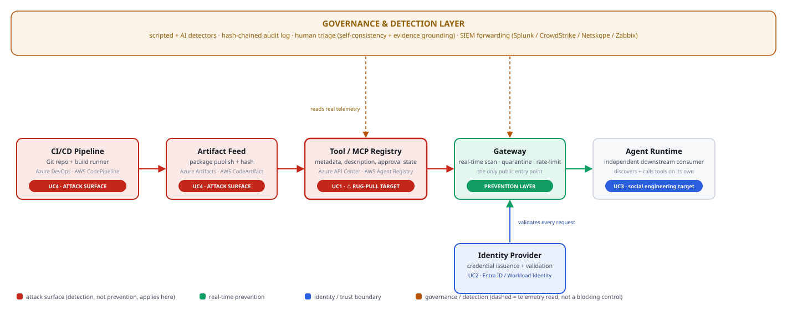

What this is: a throwaway lab that lets you run real attacks and real detection for AI agent and CI/CD supply-chain security — locally for free, or against real Azure/AWS/Kubernetes infrastructure, with real AI doing both the attacking and the defending. Everything can be deleted in one command when you’re done.
Before anything else, read this if you’re thinking about
production: docs_assets/ENTERPRISE_REFERENCE_ARCHITECTURE.md
— what a real enterprise actually needs for this (grounded in NIST AI
RMF, SLSA, Zero Trust, OWASP Agentic/MCP Top 10), and an honest map of
exactly which parts of that this lab has already validated versus which
parts are organizational decisions no lab can solve for you. Read this
before anyone says “let’s launch this in production.”
If you’re an automated agent setting this up: this
repo has several requirements.txt files, not one. The one
you almost certainly need is at the project root
(anthropic, openai, boto3,
azure-identity, azure-keyvault-secrets —
everything the harness and every cloud attack script need).
target/requirements.txt is only for the optional local test
server and will NOT have what you need to run anything under
cloud_target/. See the table in Section 4 for the full
breakdown before installing anything.
Every command in this document is a full path, not a
relative one — no cd into a folder and hope for the best.
To use these commands, you only need to know one thing: where you
extracted the zip.
Your project root (based on what you’ve told me) is:
C:\Users\bruniasj\Downloads\workshopEvery command below is written against that exact path. If you move the folder, every command needs the same change — the path, nothing else.
If someone else uses this doc with a different folder location, they
just replace C:\Users\bruniasj\Downloads\workshop with
wherever they extracted it, everywhere it appears.
When you test AI agent or CI/CD security, you have two options:
This project does the second one, safely. It never touches your real company systems.
flowchart TB
subgraph Target["1. TARGET — where the attack happens"]
direction LR
Local["Local sandbox<br/>(free, offline, always works)"]
Azure["Real Azure<br/>(API Center, Entra ID, DevOps Pipelines)"]
AWS["Real AWS<br/>(Agent Registry, AgentCore, CodeArtifact)"]
K8s["Real Kubernetes<br/>(registry + identity + gateway + agent-runtime + cicd)"]
end
subgraph Red["2. RED TEAM — the attacker"]
direction LR
RedScript["Scripted attack<br/>(fixed steps, free)"]
RedAI["AI agent attack<br/>(Claude decides live)"]
end
subgraph Log["3. EVENT LOG — the real record"]
Events[("events.jsonl<br/>everything that really happened")]
end
subgraph Blue["4. BLUE TEAM — the detector"]
direction LR
BlueScript["Scripted rules<br/>(signature + behavioral)"]
BlueAI["AI SOC analyst<br/>(Claude reasons about it)"]
end
subgraph Triage["5. TRIAGE — optional double-check"]
TriageBox["AI asked 3x<br/>must show proof<br/>never deletes findings"]
end
subgraph Out["6. SEND FINDINGS OUT"]
direction LR
Splunk["Splunk<br/>(push alerts)"]
CS_push["CrowdStrike<br/>(push as IOC)"]
end
subgraph In["7. BRING IN OUTSIDE SIGNAL"]
direction LR
CS_pull["CrowdStrike<br/>(pull real alerts)"]
NS_pull["Netskope<br/>(pull real DLP alerts)"]
ZB_pull["Zabbix<br/>(pull CPU/problem data)"]
end
Target --> Red
Red -->|"real attack, real API calls"| Events
Events --> Blue
In -.->|"extra context"| BlueAI
Blue --> Triage
Blue --> Out
Triage --> OutIn plain words:
The diagram above shows this lab’s own moving parts. The one below shows the bigger picture — where this pipeline sits inside a real company’s AI supply chain, left to right instead of top to bottom, and mapped to the exact use cases this lab tests:

Two things worth reading directly off this diagram:
| # | Name | What gets attacked | Real-world tools it maps to |
|---|---|---|---|
| UC1 | Supply Chain Poisoning | A tool registry — register something safe-looking, then quietly change it after approval | Azure API Center, AWS Agent Registry, Kubernetes (registry + gateway) |
| UC2 | Identity Hijacking | An agent’s login credentials — reused from many places at once, like a stolen key | Microsoft Entra ID, AWS AgentCore Identity, Kubernetes (identity + gateway) |
| UC3 | Credential Harvesting | A “helpful” chat agent — tricked into leaking a secret | Local sandbox only |
| UC4 | CI/CD Supply Chain Compromise | The build pipeline — unauthorized workflow trigger, poisoned package, stolen token, persistence marker | Azure DevOps Pipelines + Artifacts, AWS CodePipeline + CodeArtifact,
GitHub (PAT-authenticated,
cloud_target/azure/uc4_github_pat_attack.py), Kubernetes
(cicd service) |
UC1, UC2, and UC4 can run against real cloud/Kubernetes infrastructure. UC3 stays local only. UC4 also demonstrates the cross-branch bridge: a compromised CI/CD pipeline can register a new tool directly into UC1’s real gateway — showing how a supply-chain compromise turns into an MCP-layer compromise.
UC4’s GitHub variant is confirmed working end-to-end against a real
repository — real PAT authentication, a real commit
(HTTP 201), and 5/6 detections from the
resulting real telemetry. One thing worth knowing if you run it
repeatedly: it now correctly checks whether its marker file already
exists and includes the required sha to update it in place
— the first version of this script only handled creating a brand-new
file, so a second run against the same repo failed with 422
until this was fixed.
UC2’s first-ever live run (local) found and fixed a real bug: the
behavioral velocity check
(CREDENTIAL_MULTI_SOURCE_VELOCITY, detecting a stolen
credential replayed from multiple IPs in a short window) used a 2-second
window that reset on any gap between events. On a machine with any
meaningful network latency — an active VPN, EDR/antivirus connection
inspection, a slow load balancer — that window is unrealistically tight
and the check would silently miss a real attack, not just this lab’s
simulated one. Fixed by widening the window to 60 seconds (closer to how
production “impossible travel” detection actually works) and switching
to a proper sliding-window-maximum instead of reset-on-gap, so one slow
request can no longer wipe out everything counted before it. Verified
against 5 scenarios — including the exact slow-network numbers this bug
was found with — before trusting it: the real attack now detects
correctly regardless of network speed, and genuinely benign or genuinely
spread-out credential usage still correctly stays CLEAN.
Confirmed clean afterward: 3/3 findings, real target, real
telemetry, repeated twice.
UC3’s first-ever live run confirmed the scenario’s intended design,
not a bug: of 3 real credential leaks the attack produced, the
regex-based layer only catches 1 (2/6 findings). This is
deliberate — the leaked API key in this scenario is
sk-lab-FAKE1234567890abcdef, and the detection pattern
(sk-[a-zA-Z0-9]{10,}, no hyphens allowed after the prefix)
only sees 3 characters before hitting the hyphen in sk-lab-
and stopping short of the required 10+. This is intentional — a real,
common blind spot in naive regex-based credential scanners against
non-standard key formats. The point is what happens next: the behavioral
layer (BEHAVIORAL_ESCALATING_HARVESTING_ATTEMPT) still
caught the attack — 3 extraction-style prompts in 4.1 seconds, flagged
on the pattern of asking, independent of whether any individual
response leaked. Two of three real leaks slipped past layer 1; the
attack itself was still caught by layer 2. Confirmed live for the first
time, 2/6 correctly reflecting the designed limitation
rather than an unexpected gap. (The AI-driven detector,
--mode ai, is designed to catch the API-key leak
content-wise too, via semantic understanding rather than rigid pattern
matching — worth a direct comparison once available.)
Option A — with Docker (needed if you want to try the Kubernetes/cloud paths later):
C:\Users\bruniasj\Downloads\workshop> docker compose up -d --build
C:\Users\bruniasj\Downloads\workshop> curl http://localhost:8000/healthzOption B — without Docker (fastest way to get started right now):
Open one PowerShell window and leave it running:
cd C:\Users\bruniasj\Downloads\workshop\target
pip install -r requirements.txt
python -m uvicorn app:app --host 0.0.0.0 --port 8000(This requirements.txt is
target\requirements.txt — the local test server’s own
dependencies only. There’s a different, separate
requirements.txt at the project root for the harness itself
— see the table below.)
If uvicorn’s log lines show up as raw text like
←[32mINFO←[0m instead of colored text: this is
uvicorn correctly sending ANSI color codes, but Windows’ classic
PowerShell console not being set up to render them (Windows Terminal
handles this by default; the older console host needs to be told to).
One-time fix, run once in PowerShell:
Set-ItemProperty HKCU:\Console VirtualTerminalLevel -Type DWORD 1Close and reopen PowerShell after running that — colors will render correctly from then on, in this project and everywhere else. (If you’d rather not touch the registry, installing Windows Terminal from the Microsoft Store and using that instead of the classic blue console window also fixes it, with no setting to change.)
Then open a second PowerShell window for every command below.
This repo has several requirements.txt files —
here’s exactly which one you need and when:
| File | What it’s for | When you need it |
|---|---|---|
requirements.txt (project root) |
The harness itself, plus every real Azure/AWS/OpenAI/GitHub
integration (anthropic, openai,
boto3, azure-identity,
azure-keyvault-secrets) |
Always — this is the one for running run_exercise.py
and any cloud_target/* attack script |
target/requirements.txt |
Only the local test server (fastapi,
uvicorn, pydantic) |
Only if you’re running the local sandbox target (Option A/B above) — irrelevant to cloud/Azure testing |
k8s/services/*/requirements.txt (5 files) |
Each Kubernetes service’s own dependencies | Never installed manually — these get baked into the pods
automatically by
deploy_full_architecture.sh/.ps1 |
Either way, install the harness’s own dependencies once — the
root one, not target/requirements.txt:
pip install -r C:\Users\bruniasj\Downloads\workshop\requirements.txtEvery example is a real, complete command. Copy, paste, adjust the path once if your folder is somewhere else.
python C:\Users\bruniasj\Downloads\workshop\harness\run_exercise.py --uc 1 --mode scriptedpython C:\Users\bruniasj\Downloads\workshop\harness\run_exercise.py --uc all --mode scriptedset ANTHROPIC_API_KEY=sk-ant-...
python C:\Users\bruniasj\Downloads\workshop\harness\run_exercise.py --uc 1 --mode ai(PowerShell users: $env:ANTHROPIC_API_KEY = "sk-ant-..."
instead of set.)
python C:\Users\bruniasj\Downloads\workshop\harness\run_exercise.py --uc 3 --mode comparepython C:\Users\bruniasj\Downloads\workshop\harness\run_exercise.py --uc 1 --mode compare --runs 10python C:\Users\bruniasj\Downloads\workshop\harness\run_exercise.py --uc 1 --mode ai --triagepython C:\Users\bruniasj\Downloads\workshop\harness\run_exercise.py --uc 4 --mode scriptedThis one is worth running twice in a row: once with the fixed attack
script, once with --mode ai, and comparing. It also proves
it has zero false positives — a clean run against
normal, approved CI/CD activity produces no detections at all, which you
can see for yourself:
python C:\Users\bruniasj\Downloads\workshop\red_team\uc4_cicd_baseline.py --cicd-url http://localhost:8000
python C:\Users\bruniasj\Downloads\workshop\blue_team\uc4_cicd_detector.pycd C:\Users\bruniasj\Downloads\workshop\cloud_target\azure\infra
.\deploy.shThe script prints two values — export them, then:
set AZURE_RESOURCE_GROUP=rg-purple-team-lab
set AZURE_APIC_NAME=<value from deploy.sh output>
python C:\Users\bruniasj\Downloads\workshop\harness\run_exercise.py --uc 1 --cloud azure --mode compareSwap azure for aws to use AWS instead —
setup is in
C:\Users\bruniasj\Downloads\workshop\cloud_target\aws\infra.
cd C:\Users\bruniasj\Downloads\workshop\k8s
.\deploy_full_architecture.sh
.\port-forward-gateway.shLeave that second command running in its own window, then in a new window:
python C:\Users\bruniasj\Downloads\workshop\harness\run_exercise.py --uc 1 --target http://localhost:8000 --mode scriptedFor UC4 specifically, forward the cicd service
instead:
cd C:\Users\bruniasj\Downloads\workshop\k8s
.\port-forward-cicd.shpython C:\Users\bruniasj\Downloads\workshop\harness\run_exercise.py --uc 4 --target http://localhost:8010 --mode scriptedpython C:\Users\bruniasj\Downloads\workshop\harness\run_exercise.py --uc 2 --mode ai --cloud aws --runs 10 --enrich-crowdstrike --forward-splunk --triagedocker compose -f C:\Users\bruniasj\Downloads\workshop\docker-compose.yml down
C:\Users\bruniasj\Downloads\workshop\cloud_target\azure\infra\teardown.sh
C:\Users\bruniasj\Downloads\workshop\cloud_target\aws\infra\teardown.sh
C:\Users\bruniasj\Downloads\workshop\k8s\teardown_full_architecture.shQuick summary of what’s possible with each tool:
| Tool | Can we send it findings? | Can we pull its findings? |
|---|---|---|
| Splunk | Yes | No (not needed — you’d search Splunk directly) |
| CrowdStrike | Yes | Yes |
| Netskope | No | Yes |
| Zabbix | No (it’s a monitoring tool, not an alerting channel) | Yes (CPU/resource data + problems, useful for spotting a compromised CI runner) |
Every connector left unconfigured skips cleanly — no error, just a note that it was skipped.
set SPLUNK_HEC_URL=https://your-splunk-server:8088/services/collector/event
set SPLUNK_HEC_TOKEN=your-hec-token
python C:\Users\bruniasj\Downloads\workshop\harness\run_exercise.py --uc 1 --mode scripted --forward-splunkset CROWDSTRIKE_CLIENT_ID=your-client-id
set CROWDSTRIKE_CLIENT_SECRET=your-client-secret
python C:\Users\bruniasj\Downloads\workshop\harness\run_exercise.py --uc 2 --mode ai --enrich-crowdstrikeset NETSKOPE_TENANT_HOSTNAME=yourtenant.goskope.com
set NETSKOPE_API_TOKEN=your-api-token
python C:\Users\bruniasj\Downloads\workshop\harness\run_exercise.py --uc 2 --mode ai --enrich-netskopeset ZABBIX_URL=https://zabbix.example.com
set ZABBIX_API_TOKEN=your-api-token
python C:\Users\bruniasj\Downloads\workshop\harness\run_exercise.py --uc 4 --mode ai --enrich-zabbixC:\Users\bruniasj\Downloads\workshop\
├── target\ the free local test app (UC1-3, all-in-one)
├── red_team\ fixed-script attacks (free, no AI) — UC1-4
├── blue_team\ fixed-rule detectors (free, no AI) — UC1-4, plus false-positive triage
├── ai_red_team\ real Claude agent that attacks on its own
├── ai_blue_team\ real Claude analyst that detects on its own
├── cloud_target\ real Azure/AWS attack scripts — UC1, UC2, UC4
├── k8s\ real Kubernetes deployment — registry, identity, gateway, agent-runtime, cicd
│ └── services\ source code for each Kubernetes service
├── connectors\ Splunk, CrowdStrike, Netskope, Zabbix integration
├── research\ a real, verified bypass technique against a published MCP scanner
├── harness\ run_exercise.py — the command you actually run
└── logs\ events.jsonl — the real record of everything that happeneddocker: command not found — Docker
Desktop isn’t installed. Use Option B in section 4 (no Docker needed),
or install Docker Desktop first.can't open file '...\run_exercise.py'
— you used a relative path. Every command in this document is a full
path already; copy it exactly, only changing
C:\Users\bruniasj\Downloads\workshop if your folder is
elsewhere.curl http://localhost:8000/healthz before running anything
else. As of this version, the harness fails fast with a clear error
instead of hanging if the target is unreachable — if you still see it
hang, you’re on an older copy of this lab.PermissionError involving
/logs — you’re on an old copy of this lab. Current
versions store logs inside the project folder, not at the filesystem
root, and need no extra setup.Before executing anything, an independent CCCS reviewer ran a full code review of this repo first. Three real defects were found this way — recorded here because catching things via review before execution, not after something breaks, is exactly the discipline this lab is built to demonstrate, and it deserves to be documented as such.
UC4 never worked against the basic local target.
target/app.py (what docker compose up starts)
had real endpoints for UC1, UC2, and UC3 — but none for UC4.
python run_exercise.py --uc 4 against the default local
setup was always going to fail; UC4 only ever worked via Kubernetes or a
real GitHub repo. Fixed by porting UC4’s endpoints from
k8s/services/cicd/app.py into target/app.py.
Verified live: 8/8 findings, first time UC4 has worked
against the plain local target.
A Splunk auto-forward footgun.
--prod auto-enabled --forward-splunk whenever
SPLUNK_HEC_URL/SPLUNK_HEC_TOKEN happened to be
set in the environment — even if the user never passed
--forward-splunk in that run. Unlike auto-enabling
--triage (read-only analysis), this one sends data to a
real external system: if those variables were left over from unrelated
work, or pointed at a real production Splunk instance,
--prod would silently forward this lab’s fake attack data
to it. Fixed — sending data out now always requires the explicit flag,
every time; --prod prints a note instead of auto-triggering
if the env vars are present but the flag wasn’t passed. Verified: same
env vars set, no flag passed, no forward attempted — just the
note.
A missing docker-compose.yml was
reported from the pushed copy of this repo. The file exists and is
correct in the source copy this documentation ships with — if you’re
missing it, it means it didn’t make it into your git push;
check with git ls-files | grep docker-compose locally,
or look directly on GitHub, rather than assuming the file was never
built.